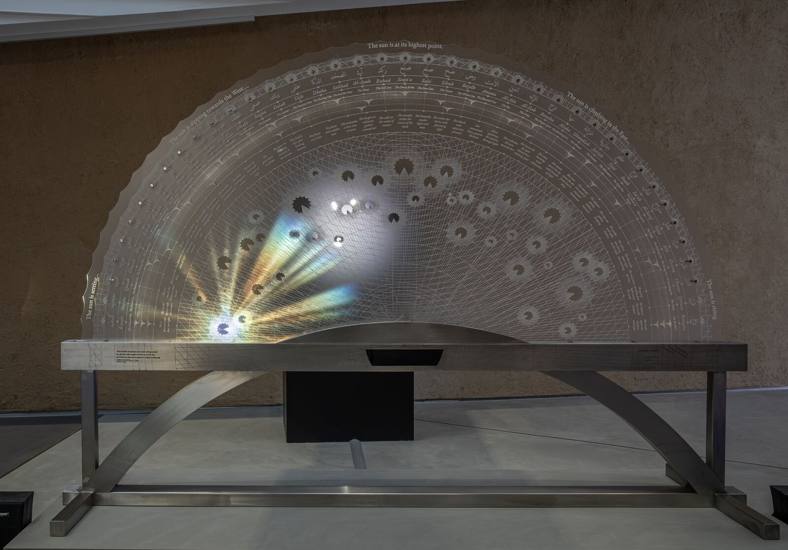
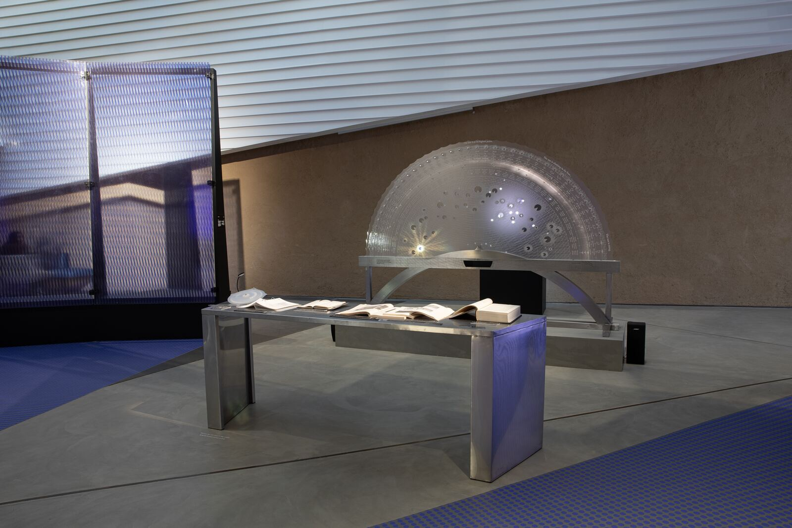
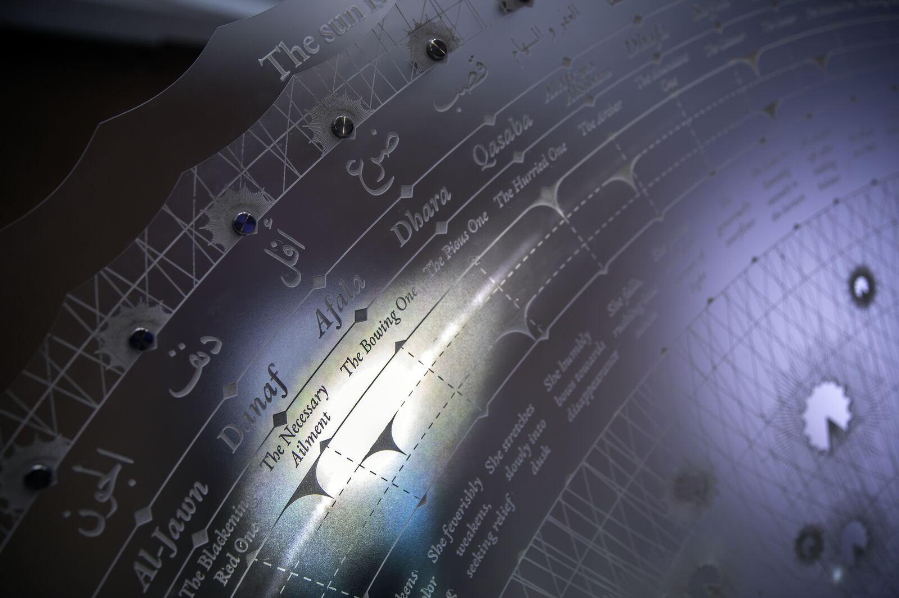

Names of the Sun
1d
Interactive Installation

Names of the Sun, 2026
Frosted acrylic, brushed stainless steel, projection, sound
Continuum, Diriyah Art Futures (DAF), Riyadh
September 4 – November 14, 2026
Projection. Tracks the sun in real time, shifting continuously as it moves across the sky.
Sound. Ney and duduk: the ney carries the sun from sunrise to noon, the duduk from noon to sunset. After dark, the full cycle repeats on a loop.
listen
4:36
Ney: Bader AlKhuraif




The acrylic and the steel structure were made by Eng. Abdulaziz AlBaghli at Bunyah.
Code: Hugues Kir and Mark Armstrong